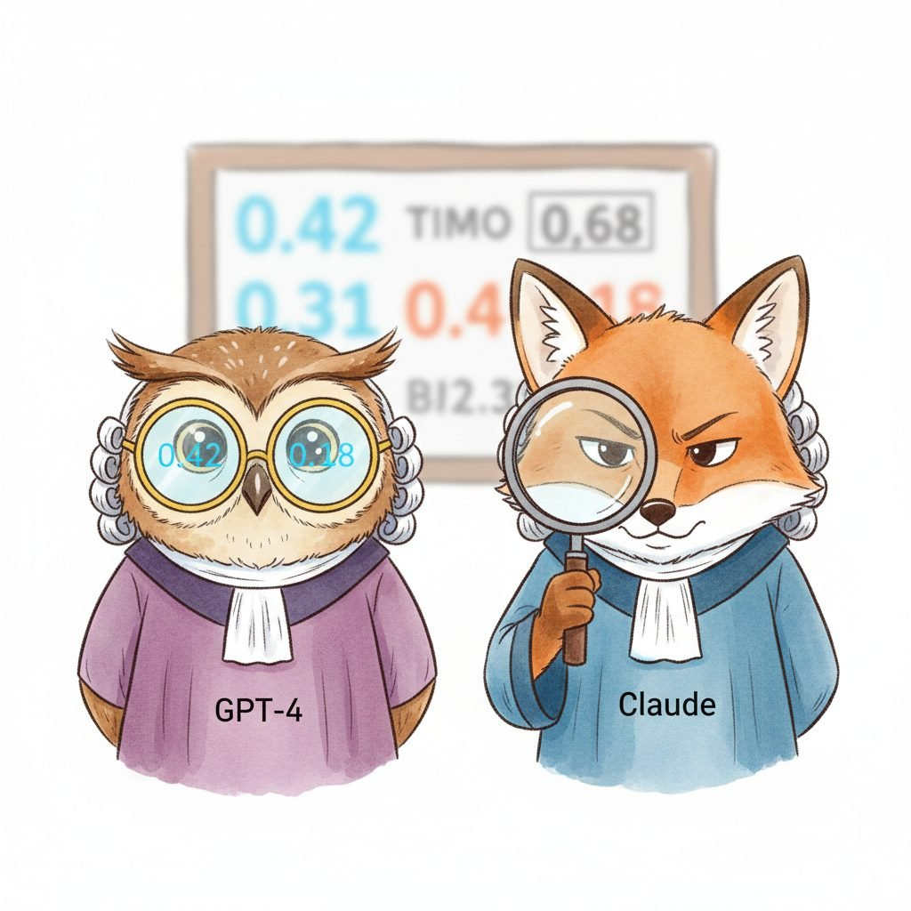

"Argmax over '1' through '5' throws away the uncertainty the judge was kind enough to give you. Read the log-probabilities; the judge meant 3.5, not 4."
Eval, Probability-Mass-Conserving AI Agent
Asking a judge model "rate this summary from 1 to 5" and parsing the integer it emits throws away most of the signal. Two summaries that are clearly different in quality can both round to "4", and a judge that is genuinely uncertain between 3 and 4 collapses that uncertainty into a single hard choice. G-Eval fixes both problems with two ideas. First, the judge is forced to reason step-by-step before emitting a score, which both improves alignment with human ratings and gives a chain of thought for diagnosing disagreements. Second, instead of taking the argmax token, G-Eval reads the log-probability distribution over the digit tokens "1"-"5" and computes a probability-weighted continuous score. The result is a finer-grained scalar that captures judge uncertainty, correlates better with human ratings, and is more stable across reruns. The rest of this section walks through the algorithm and the practical considerations for non-OpenAI models.
G-Eval, introduced by Liu et al. (2023), applies chain-of-thought (CoT) reasoning to NLG evaluation. Rather than asking a judge model to produce a single score, G-Eval prompts the model to first generate a detailed evaluation chain of thought, then produce a numeric score. The key innovation is using the token probabilities of the score tokens to compute a weighted score, which produces finer-grained and more stable evaluations than simply taking the argmax score. This probability-weighted approach reduces the discretization noise inherent in integer scoring scales.
G-Eval operates on four dimensions commonly used in NLG evaluation: coherence, consistency, fluency, and relevance. For each dimension, a task-specific prompt instructs the judge model to evaluate the output step by step. The prompt includes the evaluation criteria, a detailed description of what each score level means, and the source document and generated summary (or question and response for QA tasks). Code Fragment 46.2.3 implements the G-Eval scoring pipeline.
Algorithm: G-Eval expectation score
Input: judge model M with token logprobs, evaluation prompt (rubric + CoT instruction),
source document s, candidate output y, score range {1, .., K}
Output: continuous score s_hat in [1, K]
// 1. Construct the judge prompt with chain-of-thought instruction
prompt := build_geval_prompt(rubric, s, y)
// "First think step by step, then output a score from 1 to K."
// 2. Run the judge; capture logprobs of the score-token slot
cot, score_logprobs := M.generate_with_logprobs(prompt)
// 3. Project onto the K candidate digits, exponentiate, renormalize
For k = 1..K:
p_k := exp( score_logprobs[ token(str(k)) ] )
Z := sum_{k = 1..K} p_k
For k = 1..K:
p_k := p_k / Z // digit-only renormalization
// 4. Expectation under the (renormalized) score distribution
s_hat := sum_{k = 1..K} k * p_k // E_{k ~ p}[k] in [1, K]
Return s_hat
Fallback when logprobs are not exposed (Anthropic Claude, some Gemini configs):
s_hat := (1 / N) * sum_{n = 1..N} parse_int( M.generate(prompt; temperature = tau) )
with N ~ 10..50 and tau ~ 0.5..1.0. By the law of large numbers this Monte Carlo
average converges to the same E_{k ~ p}[k] for tau matched to the model's calibration.For an integer scoring scale $S = \{1, 2, \ldots, K\}$ (typical $K = 5$), let $p_k$ be the model's predicted probability that the next token is the digit $k$, conditioned on the chain-of-thought prefix. The naive argmax estimator is $\hat{s}_{\text{argmax}} = \arg\max_{k \in S} p_k$, which is integer-valued and discards the full distribution. G-Eval instead computes the probability-weighted expectation:
$$\hat{s}_{\text{G-Eval}} \;=\; \sum_{k=1}^{K} k \cdot \frac{p_k}{\sum_{j=1}^{K} p_j}.$$
The denominator renormalizes over only the digit tokens (ignoring probability mass on non-numeric tokens). The result $\hat{s}_{\text{G-Eval}} \in [1, K]$ is continuous: a judge that splits its mass evenly between "3" and "4" returns $3.5$, whereas argmax would return whichever digit had a marginally higher probability. Continuous outputs preserve rank ordering across small quality differences that argmax collapses to ties, which is the source of G-Eval's correlation improvement with human ratings. Source: Liu et al., "G-Eval: NLG Evaluation using GPT-4 with Better Human Alignment," EMNLP 2023 (arXiv:2303.16634).
Suppose a judge produces the following score-token distribution for two competing summaries on a 1-5 coherence scale:
Summary A: $p_3 = 0.42$, $p_4 = 0.40$, $p_5 = 0.10$, others $0.08$.
Summary B: $p_3 = 0.10$, $p_4 = 0.55$, $p_5 = 0.25$, others $0.10$.
Argmax assigns A $\to$ 3 and B $\to$ 4. Renormalizing the digit mass (A: $1 - 0.08 = 0.92$; B: $1 - 0.10 = 0.90$) and computing the weighted score:
$\hat{s}_A = (3 \cdot 0.42 + 4 \cdot 0.40 + 5 \cdot 0.10) / 0.92 = 3.65$
$\hat{s}_B = (3 \cdot 0.10 + 4 \cdot 0.55 + 5 \cdot 0.25) / 0.90 = 4.17$
G-Eval reports $3.65$ and $4.17$, preserving the $\sim 0.5$-point quality gap and B's mild edge. Liu et al. (2023) report this kind of finer-grained signal improves Spearman correlation with human ratings on SummEval by roughly $0.05$-$0.10$ points (e.g., $0.42 \to 0.51$ on coherence), which is the difference between a borderline-useful and a clearly-useful judge.
# G-Eval: chain-of-thought scoring with probability weighting
from openai import OpenAI
import numpy as np
client = OpenAI()
GEVAL_COHERENCE_PROMPT = """You will be given a summary of a news article.
Your task is to rate the summary on coherence (1-5).
Evaluation Criteria:
Coherence (1-5): The collective quality of all sentences. The summary
should be well-structured and well-organized. It should not just be
a heap of related information, but should build from sentence to
sentence to a coherent body of information about a topic.
Evaluation Steps:
1. Read the summary carefully.
2. Check if the sentences logically follow each other.
3. Check if there is a clear topic progression.
4. Check if the summary has a clear beginning, middle, and end.
5. Assign a score from 1 to 5.
Summary: {summary}
After providing your evaluation steps, output your score (1-5):"""
def geval_score(
summary: str,
prompt_template: str = GEVAL_COHERENCE_PROMPT,
model: str = "gpt-4o",
) -> dict:
"""Compute G-Eval score with probability weighting."""
prompt = prompt_template.format(summary=summary)
response = client.chat.completions.create(
model=model,
messages=[{"role": "user", "content": prompt}],
max_tokens=512,
temperature=0.0,
logprobs=True,
top_logprobs=5,
)
content = response.choices[0].message.content
logprobs = response.choices[0].logprobs
# Extract probability distribution over score tokens (1-5)
# from the last token's logprobs
score_probs = {}
if logprobs and logprobs.content:
last_token_logprobs = logprobs.content[-1].top_logprobs
for lp in last_token_logprobs:
if lp.token.strip() in ["1", "2", "3", "4", "5"]:
score_probs[int(lp.token.strip())] = np.exp(lp.logprob)
# Compute probability-weighted score
if score_probs:
total_prob = sum(score_probs.values())
weighted_score = sum(
score * (prob / total_prob)
for score, prob in score_probs.items()
)
else:
# Fallback: extract integer score from text
weighted_score = float(content.strip()[-1])
return {
"chain_of_thought": content,
"score_distribution": score_probs,
"weighted_score": round(weighted_score, 3),
}46.2.1 G-Eval: Chain-of-Thought Scoring
LLM judges have a documented preference for verbose answers, answers that appear first in the prompt, and answers that share their own writing style. Teams who train their own SFT data with a single judge model often discover, six months later, that they have trained the student to write like the teacher, including the teacher's grammatical tics.
Prerequisites
This section assumes familiarity with why LLM-as-judge matters from Section 46.1 and with experimental design and inter-rater agreement from Section 42.2. Familiarity with decoding and logprob outputs from Section 4.2 helps when reading the G-Eval algorithm.
The 60-line implementation above is the teaching version. In production, deepeval (Confident AI, 2023+) wraps the same probability-weighted G-Eval recipe behind a pytest-style metric class with built-in logprob handling for OpenAI, Anthropic, and any open-weights model served behind LiteLLM. It also auto-detects whether the judge exposes logprobs and falls back to the temperature-averaging strategy described in the next callout when not.
Show code
pip install deepeval
from deepeval.metrics import GEval
from deepeval.test_case import LLMTestCase, LLMTestCaseParams
coherence = GEval(
name="Coherence",
evaluation_steps=[
"Check if sentences logically follow each other",
"Check for clear topic progression",
],
evaluation_params=[LLMTestCaseParams.ACTUAL_OUTPUT],
)
case = LLMTestCase(input="Summarize the article.", actual_output=summary)
coherence.measure(case)
print(coherence.score, coherence.reason)deepeval replaces the manual logprob extraction in Code Fragment 46.2.1 with a single measure() call; pair it with deepeval test run tests/ to run G-Eval inside CI alongside unit tests.G-Eval requires logprobs access. The probability-weighted scoring that makes G-Eval effective depends on access to token-level log probabilities. As of 2025, the OpenAI API provides logprobs for GPT-4o and GPT-4o-mini. For models that do not expose logprobs (such as Claude), you can approximate G-Eval by running multiple evaluations with temperature > 0 and averaging the scores, though this is slower and less precise. Alternatively, use the open-source judge models discussed in the Prometheus section below, which provide full logprob access via local inference.
Figure 46.2.2 dramatizes why the same judging recipe behaves so differently across providers: only some APIs hand you the log-probability distribution that G-Eval reads, while others leave the judge squinting at a single argmax token.

Anthropic's Claude API does not expose token-level logprobs, so the canonical G-Eval recipe is unavailable. The fallback is Monte Carlo score averaging: query the judge $N$ times at temperature $\tau > 0$ and average the parsed integer scores. The empirical mean approximates the same expectation $\mathbb{E}_{k \sim p}[k]$ that G-Eval reads off the logprobs analytically.
from anthropic import Anthropic
client = Anthropic()
def geval_claude(summary: str, n_samples: int = 20) -> float:
scores = []
for _ in range(n_samples):
msg = client.messages.create(
model="claude-opus-4-5",
max_tokens=256,
temperature=1.0, # non-zero so we get a distribution
messages=[{"role": "user",
"content": GEVAL_COHERENCE_PROMPT.format(summary=summary)}],
)
# Parse the last digit 1-5 from the response text
for ch in reversed(msg.content[0].text):
if ch in "12345":
scores.append(int(ch))
break
return sum(scores) / len(scores) # continuous score in [1, 5]
Twenty samples at $\tau = 1.0$ typically recover ${\sim}80\%$ of the precision gain G-Eval gets from analytic logprobs at $\sim 20\times$ the cost. If your eval budget is tight, drop $n$ to 5-10 and accept noisier scores; if precision matters more than budget, push to 50. The same recipe works for any logprob-less judge (older open-weights Llama deployments behind chat-only APIs, Gemini in some configurations, etc.).
- Argmax-over-digits throws away the judge's uncertainty: two summaries that round to "4" can differ in real quality, and a judge split between 3 and 4 collapses to one digit unless you read the distribution.
- G-Eval's two innovations are CoT plus probability weighting: forcing step-by-step reasoning improves human-rating alignment, and computing the digit-renormalized expectation under the score-token distribution returns a continuous [1, K] score that preserves small quality differences.
- The expectation formula renormalizes only over digit tokens: probability mass on non-numeric tokens is dropped before computing sum_k k * p_k, so a 3.65 versus 4.17 gap survives where argmax would have reported 3 versus 4.
- Logprob-less judges use Monte Carlo averaging: 10-50 samples at temperature 0.5-1.0 on Claude or Gemini approximate the same E[k] by the law of large numbers, recovering ~80 percent of the precision gain at ~20x the API cost.
- deepeval ships the production version: G-Eval is a one-liner metric class with auto-detected logprob handling for OpenAI, Anthropic, and LiteLLM-backed open-weights models, suitable for pytest-style runs in CI.
- G-Eval lifts SummEval coherence Spearman by 0.05-0.10: the Liu et al. (2023) empirical gain (roughly 0.42 to 0.51 on coherence) is the difference between a borderline-useful and a clearly-useful judge.
Once you can measure judge bias, the next step is to neutralize it. Continue to Section 46.3: Debiasing Techniques: Position, Length, and Verbosity.